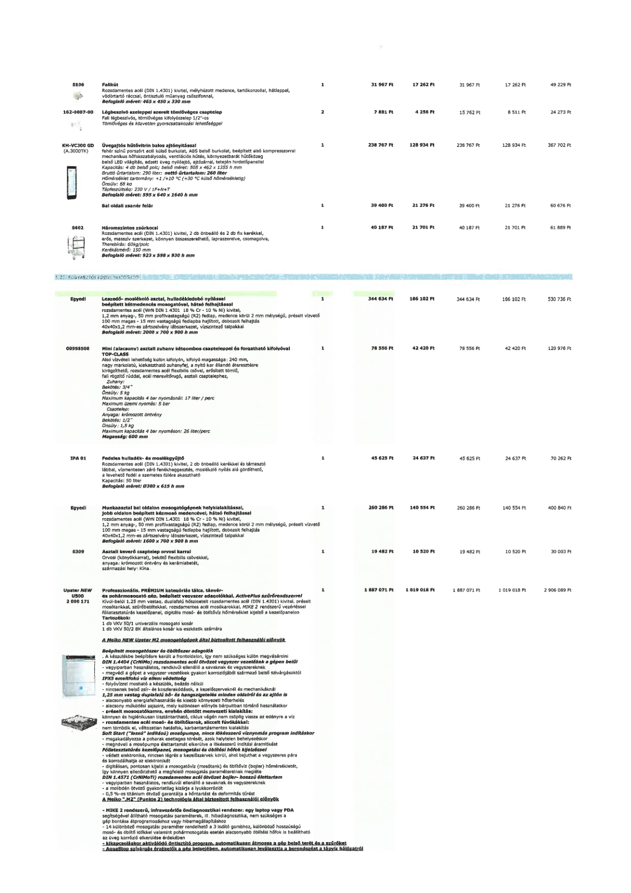

| Tétel | Menny. | Egys. | Anyag e.ár (net HUF) | Díj e.ár (net HUF) | Anyag összesen (net HUF) | Díj összesen (net HUF) | Anyag+Díj összesen (net HUF) |
|---|---|---|---|---|---|---|---|
| S106 Falikút | 1 | NaN | 31 967 | 17 262 | 31 967 | 17 262 | 49 229 |
| 162-0007-00 Légbeszívó szeleppel szerelt tömlővéges csaptelep | 2 | NaN | 7 881 | 4 256 | 15 762 | 8 511 | 24 273 |
| KH-VC300 GD (A.300DTK) Üvegajtós hűtővitrin balos ajtónyitással | 1 | NaN | 238 767 | 128 934 | 238 767 | 128 934 | 367 702 |
| Bal oldali zsanér felár | 1 | NaN | 39 400 | 21 276 | 39 400 | 21 276 | 60 676 |
| S402 Háromszintes zsúrkocsi | 1 | NaN | 40 187 | 21 701 | 40 187 | 21 701 | 61 889 |
| Egyedi Leszedő- mosogató asztal, hulladékledobó nyílással beépített kétmedencés mosogatóval, hátsó felhajtással | 1 | NaN | 344 634 | 186 102 | 344 634 | 186 102 | 530 736 |
| 00958508 Mini (alacsony) asztali zuhany kéttgombos csapteleppel és forgatható kifolyóval | 1 | NaN | 78 556 | 42 420 | 78 556 | 42 420 | 120 976 |
| IPA 01 Fedeles hulladék- és moslékgyűjtő | 1 | NaN | 45 625 | 24 637 | 45 625 | 24 637 | 70 262 |
| Egyedi Munkaasztal bal oldalon mosogatógépnek helykialakítással, jobb oldalon beépített kétmedencés mosogatóval, hátsó felhajtással | 1 | NaN | 260 286 | 140 554 | 260 286 | 140 554 | 400 840 |
| S309 Asztali keverő csaptelep orvosi karral | 1 | NaN | 19 482 | 10 520 | 19 482 | 10 520 | 30 003 |
| Upster NEW U500 2 000 171 Professzionális, PRÉMIUM kategóriás tálca, tányér- és pohármosogató gép ActivePlus szűrőrendszerrel | 1 | NaN | 1 887 071 | 1 019 018 | 1 887 071 | 1 019 018 | 2 906 089 |
